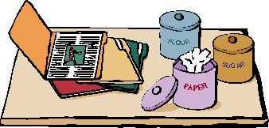

|
|
Use Appropriate MetaphorsYou need to choose the appropriate metaphor to design effective icons. Folders are the appropriate metaphor for a storage container for documents because people use folders to store pieces of paper. In contrast, most people probably wouldn't use a kitchen canister for storing documents. People do use canisters to store things, and the shape of a hard disk platter is round. But it would require a major leap of logic for people to associate a canister as a storage medium for something like paper. Figure 8-9 illustrates this point.Figure 8-9 A logical and an illogical metaphor  |